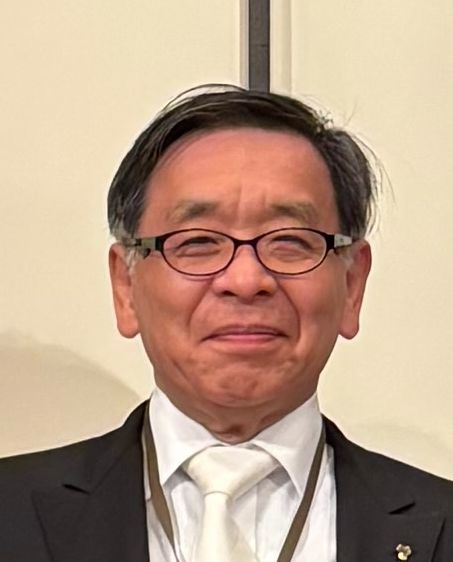
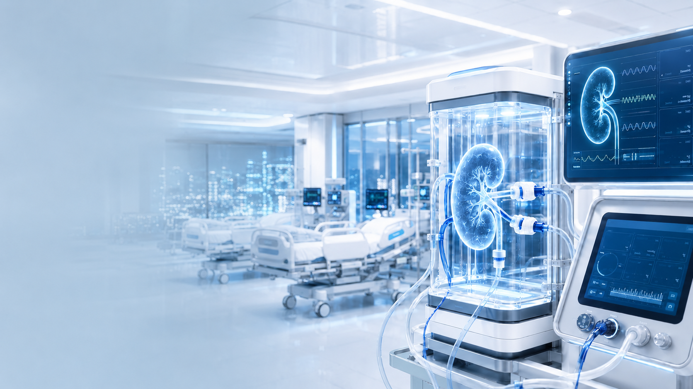

FIST-腎臓再生ICUプロジェクト
特別講演会
開催計画（案）
臓器移植に頼らない
未来医療をつくる
体外で臓器を再生する
集中治療室「ICU」の開発と実現を目指す。
LECTURE INFORMATION
講演会 開催概要
日時：
2026年8月29日（土）
①13:00開演（12:30開場）
②17:30開演（17:00開場）
2026年8月30日（日）
③10:30開演（10:00開場）
会場：
東京都内（会場調整中）
参加費：
4,000円
（各回・お一人）
チラシ完成後、ここからダウンロードできます。
ABOUT THE LECTURE
機能不全に陥った腎臓を 集中的に再生するための 医工学技術の開発を目指す
腎臓を体外へ取り出し、状態を見守りながら集中的に治療して再生する「腎臓再生ICU」。臓器移植や透析だけに頼らない未来を目指す研究の現在地と、その先にある未来医療を、一般の方にも分かりやすくお話しします。
- なぜ「臓器を体外で治す」という発想が必要なのか
- 医学と工学は、腎臓再生をどう実現しようとしているのか
- 私たちは未来医療づくりにどう参加できるのか
呼吸・循環・代謝などで機能不全に陥った重篤な患者さんを救命治療するために、高度な治療を集中的に行い管理する特別な病棟のことを言います。ICUでは、医師、看護師、薬剤師などの専門チームが連携し、24時間体制で様々な医療機器と薬剤を用いて高度な治療を行います。
SPEAKER PROFILE
講師プロフィール
中村 真人
（公）総合工学振興財団 皆んなで育てる科学技術助成 FIST-腎臓再生ICUプロジェクト代表 金沢工業大学 教授
小児科医として臓器移植を待つ患者と向き合った経験から、「臓器移植に頼らない未来」を目指して、人工心臓の研究に従事。その後、医工学研究を推進。再生医療に医工学を導入した3Dバイオプリンティングの研究分野を開拓。国際バイオファブリケーション学会創始者の一人。現在、それらの経験を踏まえて、本プロジェクト研究を提案し、2025年度よりスタートした。臓器移植に頼らない未来の実現を目指して新たな学術と技術を切り拓いています。
もっと詳しいプロフィール